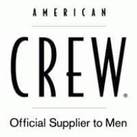
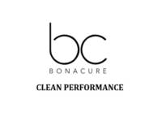
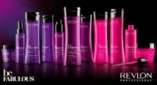
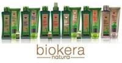

Líneas de productos de peluquería, estética y belleza.
- American Crew

es la una de las lineas de productos líder respaldada por la multinacional Revlon y dedicada a productos para el hombre. Comprar Amerian Crew para el cuidado masculino es una apuesta segura. Es un hito en la historia de la preparación de los hombres. Es la marca de salón líder creada específicamente para hombres y estilistas en quienes confían. Una línea extensa de productos desde Champús, casi personalizado, sea cual sea tu tipo de cabello American Crew tendrá una gama de productos que cubran todas sus necesidades. Para antes del secado , y para después del secado con las Ceras American Crew tendrás para todo tipo de fijación desde más fuerte a más suave, para utilizar en mojado o seco dependiendo de los look que quieras conseguir. También su exitosa línea de Afeitado.
- BC Bonacure

En los Laboratorios de Schwarzkopf Professional hemos integrado las mejores tecnologías del cuidado de la piel en los productos de BC Bonacure para proporcionar un cabello bonito, cuidado y sobretodo sano.
- BC Clean Performance

Nueva línea con queratina vegana, Bonacure Clean Performance se acoge a la belleza limpia y sostenible, tratando el cuidado del cabello ofreciendo productos de alto rendimiento. Cuentan con tecnología vegana avanzada, usando un packaging sostenible. Productos libres de sulfatos, parabenos y siliconas.
- Be FABULOUS

Be Fabulous Revlon gracias a su revolucionaria tecnología C.R.E.A.M. SYSTEM y a la combinación de avanzados ingredientes, be FABULOUS suma la eficacia y las cualidades cosméticas necesarias para lucir un cabello fabuloso. La tecnología C.R.E.A.M. SYSTEM, presente en todos los productos que componen la gama be FABULOUS, atiende simultáneamente a cinco necesidades capilares: Proteccion del color, repara el cabello en profundidad,antiedad, hidratante, y mucho brillo para el cabello. Be FABULOUS ofrece una reparación del cabello en profundidad. Sus productos para el cuidado diario del cabello aportan protección del color y han sido desarrollados específicamente para cabellos gruesos, normales y finos.
- Biokera

Biokera es una línea natural de Salerm Cosmetics, con una experiencia de más de cincuenta años, continúa innovando para dar soluciones con productos de belleza capilar realizados con los últimos avances científicos. Día a día, desde los laboratorios de investigación y desarrollo de Salerm Cosmetics, nacen nuevas fórmulas destinadas a los clientes más exigentes del mercado. Todos los beneficios de la miel para el cuidado del cuero cabelludo, aromas delicados, los mejores ingredientes seleccionados para unos resultados excepcionales para tu cabello.